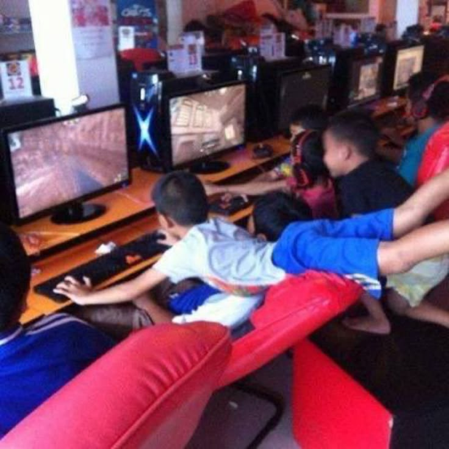
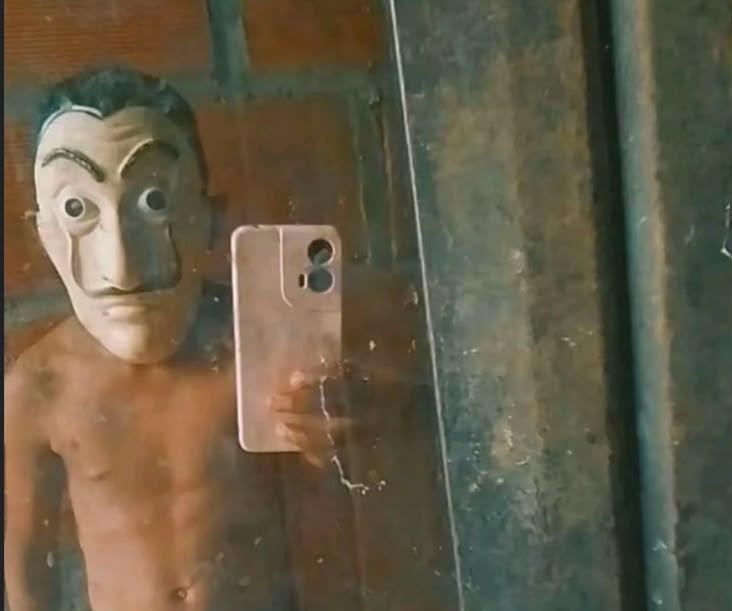

01
October 10, 2026 · Gaming · Kratos- "Don't be sorry be better"

Every game is a chance to level up
Gaming is not only about getting a win. It also asks me to pay attention, plan ahead, and learn from the choices I make. A tough match can be frustrating, but it can also show me what to practice next time.
That is a useful reminder outside the screen too: stay patient and keep trying.
02
October 18, 2026 · Coding and editing · Linus Torvalds- "Talk is cheap. Show me the code."

Create first, improve as you go
Coding and editing give me a way to turn an idea into something I can see and share. Sometimes a design does not work on the first try, so I need to test it, find the problem, and make small changes.
Every finished project starts with a first draft and a willingness to learn.
03
October 25, 2026 · Basketball · MHOT - "Wag kag tumingin sa iksi chaka sa haba kasi di man umabot sa pisngi pero SA LEEG ANG TAMA"

Good teamwork makes the difference
Basketball is a chance to move, have fun, and work together with other people. It reminds me that communication and practice matter just as much as individual skill.
Whether it is on the court or during a group task, doing your part helps everyone move forward.